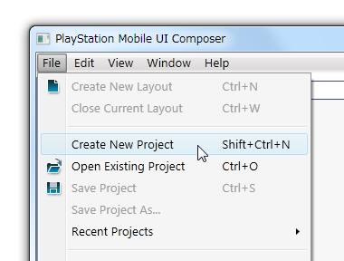
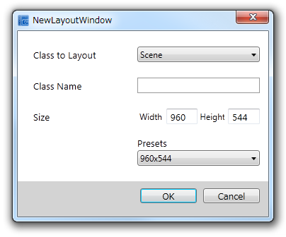
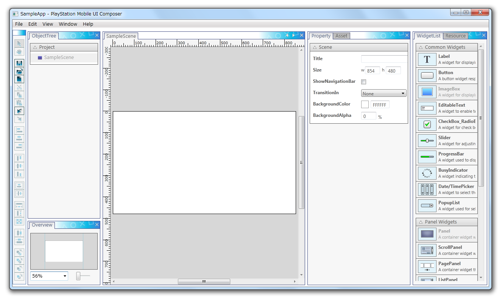
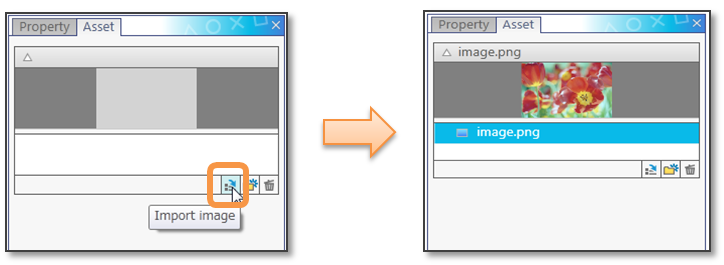
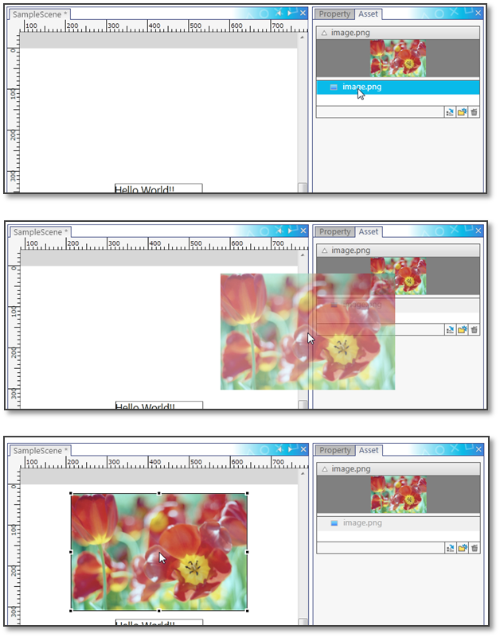
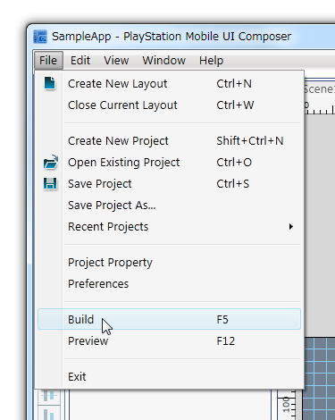
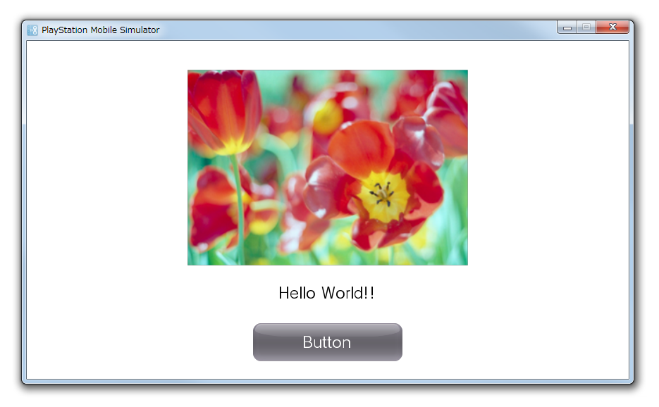

この章では、UI Composer によるレイアウト作業を概観できるように、シンプルなアプリケーションの作成を例に解説していきます。
レイアウトした内容をソースコードとして出力し、 UI Toolkit プログラミングガイド - クイックスタート に記載されているプロジェクト(以下、PSM Studio プロジェクトとします)に取り込むまでの流れを説明します。 事前に UI Toolkit プログラミングガイド - クイックスタート に沿って PSM Studio プロジェクトを作成してください。
まず、UI Composer のプロジェクトを新規に作成します。 UI Composerを起動し、メインメニューから [ファイル] - [プロジェクトの新規作成] を選択します(図1)。
図1 UI Composer プロジェクトの新規作成
新規プロジェクト作成用のダイアログの各項目に以下のように入力してください(図2)。
- 「プロジェクト名」には PSM Studio プロジェクトのプロジェクト名と同じ名前を入力します。この例では SampleApp とします。
- 「ファイルパス」には PSM Studio プロジェクトファイル (csprojファイル) のあるフォルダーを入力します。この例では C:\Projects\SampleApp\SampleApp とします。

図2 プロジェクト名、フォルダーの入力
プロジェクトの新規作成ダイアログで「OK」ボタンを選択すると、次に、レイアウト新規作成ダイアログが表示されます(図3)。
図3 レイアウトの新規作成ダイアログ
ここでは、ウィジェットの配置先となるレイアウトを作成し、レイアウト作業を行うための画面であるレイアウトキャンバスを作成します。 レイアウは後で追加していくことが可能で、１つのレイアウトが出力される１つのクラスに対応しています。
レイアウトの新規作成ダイアログの各項目に以下のように入力してください(図4)。
- 「レイアウトするクラス」にはデフォルトで Scene が選択されています。この例ではここは変更しません。
- 「クラス名」には自動生成されるクラスの名前を入力します。この例では SampleScene と入力します。
- 「画面サイズ」にはレイアウトするクラスの幅と高さを入力します。いくつかの設定がプリセットとして用意されており、その中から選択することも可能です。この例ではプリセットから 幅 854 px、高さ 480 px を指定します。

図4 レイアウトの設定項目の入力
「OK」ボタンを選択するとレイアウトウィンドウに新規にレイアウトキャンバスが表示されます(図5)。
図5 新規に作成されたレイアウトキャンバス
Label、Button、ImageBox の3つのWidgetを利用したGUI画面をレイアウトします。
まず、WidgetList ウィンドウから Label をレイアウトキャンバス上にドラッグアンドドロップして配置します(図6)。

図6 Labelの配置
Label を選択すると、プロパティウィンドウに Label プロパティが表示されます。 Textプロパティを編集することで、Label に表示させるテキストを編集することができます(図7)。

図7 LabelのTextプロパティの編集
続いて Label と同様に、Button を ウィジェットリストウィンドウからレイアウトキャンバス上にドラッグアンドドロップして配置します。
最後に ImageBox を配置します。
まず アセットウィンドウで 「Import image」ボタンから表示したい画像ファイルを選択し、画像ファイルをアセットとして読み込みます。この例では image.png ファイルを追加しています(図8)。
図8 画像ファイルの読み込み
次に アセットウィンドウで読み込まれた画像を選択し、レイアウトキャンバス上にドラッグアンドドロップして配置します(図9)。
図9 ImageBox の配置
これでレイアウト作業は完成です(図10)。

図10 レイアウトを行ったSampleScene
レイアウトした内容をソースコードとして出力します。
UI Composer のメインメニューから [ファイル] - [ビルド] を選択し、プロジェクトをビルドします(図11)。
図11 UI Composer プロジェクトのビルド
初期設定では、UI Composer のプロジェクトファイルと同じフォルダーに C# のソースコードが生成されます。 この例では、SampleScene.cs、SampleScene.composer.cs および UIStringTable.cs という３つのファイルが生成されます。
SampleScene.cs と SampleScene.composer.cs は SampleScene クラスの部分クラス定義(partial class definition)になっており、前節で行ったレイアウト作業の内容は、全て SampleScene.composer.cs に定義されています。SampleScene.composer.cs はビルドする度に上書きされますので、ボタンを押した際のイベントハンドラなどは、SampleScene.cs に記述して下さい。SampleScene.cs は既に存在する場合、生成されません。
ここまでで UI Composer の操作は終了です。
PSM Studio プロジェクトを、レイアウトしたSampleSceneが表示されるように変更します。
まず、PSM Studio プロジェクトに UI Composer の出力結果、およびアセットファイルを取り込みます。
PSM Studio プロジェクトを開き、前節で出力した C# のファイル（SampleScene.cs、SampleScene.composer.cs および UIStringTable.cs）とアセットファイル(image.png) を追加します(図12)。

図12 PSM Studio プロジェクトにファイルを追加
アセットファイルを追加した際に、「Add File to Folder」ダイアログが表示されたら、「Keep」を選択してください(図13)。

図13 UI アセットファイルの追加方法の確認ダイアログ
追加後の PSM Studio プロジェクトは以下のようになります(図14)。

図14 UI Composer の出力結果を取り込んだ PSM Studio プロジェクト
次に、メインロジック内の初期化コードを修正します。
UI Toolkit プログラミングガイド - クイックスタート で AppMain.cs に以下のように記載した箇所を変更します。
// Create scene Scene scene = new Sce.PlayStation.HighLevel.UI.Scene(); Label label = new Label(); label.X = 10.0f; label.Y = 50.0f; label.Text = "Hello World!"; scene.RootWidget.AddChildLast(label); // Set scene UISystem.SetScene(scene, null);上記の箇所を以下のように変更します。 UI Composer で作成したクラス名、Namespace が異なる場合はそれに合わせてください。
// Create scene var MyScene = new SampleApp.SampleScene(); // Set scene UISystem.SetScene(MyScene, null);また、背景色が白色になるように、AppMain.cs ファイルの以下の箇所を修正します。
// Clear the screen graphics.SetClearColor (0.0f, 0.0f, 0.0f, 0.0f); graphics.Clear ();上記の箇所を以下のように変更します。
// Clear the screen graphics.SetClearColor (1.0f, 1.0f, 1.0f, 1.0f); graphics.Clear ();この状態で UI Toolkit プログラミングガイド - クイックスタート と同様にビルド、実行することで、レイアウトした通りの画面が表示されます(図15)。
図15 シミュレータ上でのアプリケーションの実行結果